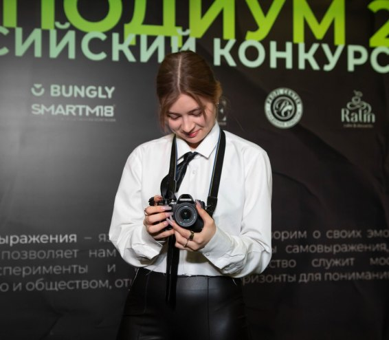
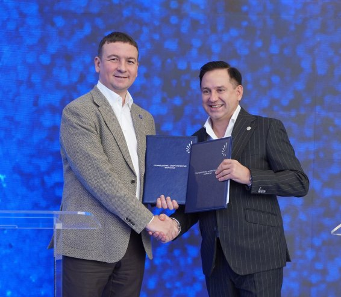
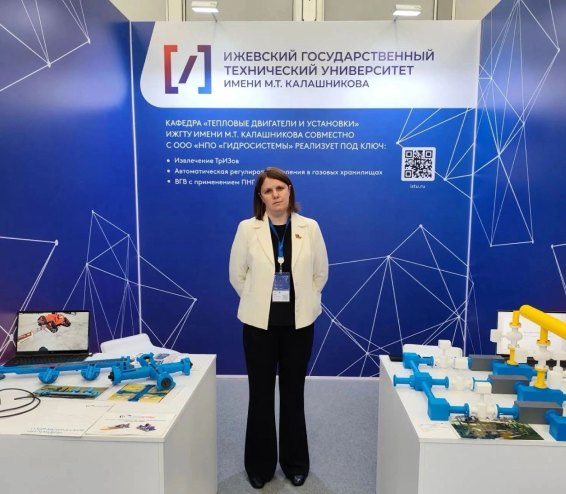
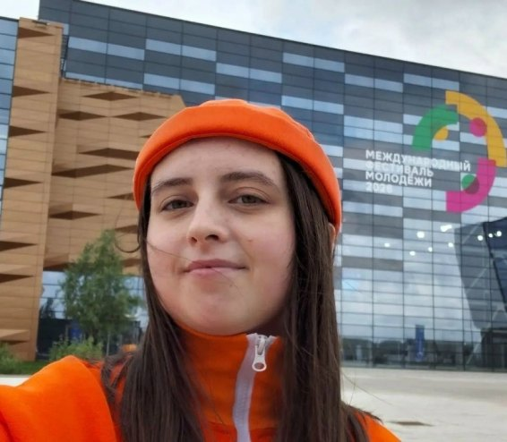

Новости
Все новости
Студентка ИжГТУ — руководитель бесплатной видеомастерской
Студентка ИжГТУ Ксения Асанова стала руководителем проекта «Геометрия кадра» — бесплатной видеомастерской, где молодёжь республики 16–25 лет за три дня снимет собственные фильмы и покажет их на большом экране. Приём заявок открыт до 30 сентября. Под руководством Ксении проект получил поддержку грантового конкурса «Росмолодёжь.Гранты»
Среда, 23 сентября 2026

Соглашение о сотрудничестве между ИжГТУ и ТюмГУ
4–17 сентября в Тюмени проходил XI Промышленно-энергетический форум TNF. Это ключевая федеральная площадка для диалога между государством, крупнейшими нефтегазовыми компаниями, поставщиками оборудования и технологий, разработчиками цифровых решений, научным сообществом и регуляторами. ИжГТУ имени М.Т. Калашникова на данном форуме представлял исполняющий обязанности ректора Михаил Олегович Писарев.
Среда, 18 сентября 2026

ИжГТУ имени М.Т. Калашникова на TNF EXPO — 2026
С 14 по 17 сентября в Тюмени прошёл XI Международный промышленно-энергетический форум TNF-2026. Это ключевая отраслевая площадка нефтегазового комплекса России, которая в этом году получила официальный международный статус.
Среда, 10 сентября 2026

Студенты ИжГТУ вернулись со Всемирного фестиваля молодёжи
Студенты ИжГТУ имени М.Т. Калашникова Радмир Шайдуллин и Яна Лукина работали на Всемирном фестивале молодёжи-2026. Фестиваль, прошедший с 11 по 17 сентября в Екатеринбурге, собрал молодёжь, экспертов и лидеров мнений из России и других стран.
Среда, 03 сентября 2026
Университет в цифрах
и специалитет Магистратура Аспирантура
и ординатура